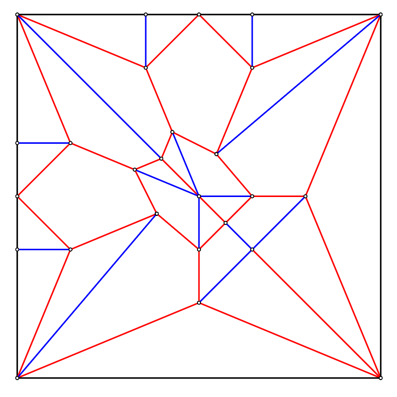
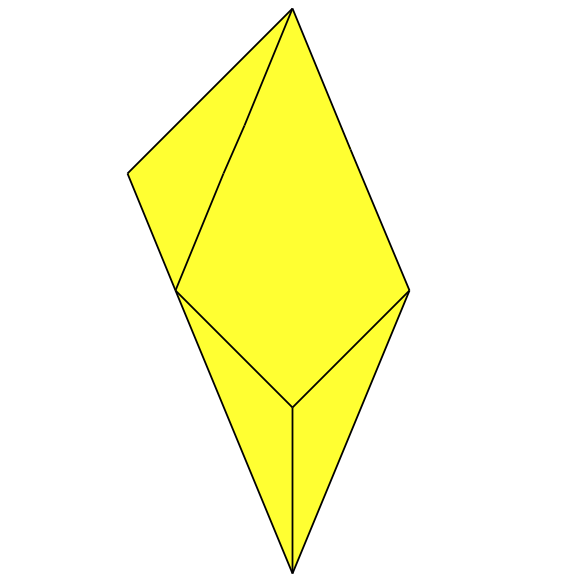

This heron is made from a frog base - I wanted long wings, long legs, and a tucked head - four long flaps and a short one! This uses a small amount of grafting to add some detail to the wings and feet.
I wish I could make toes :cry:
Heron

